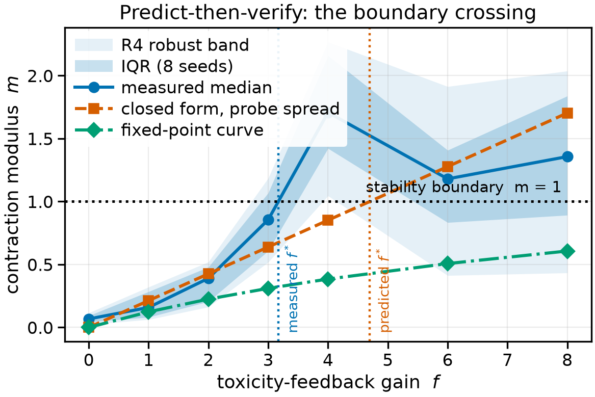
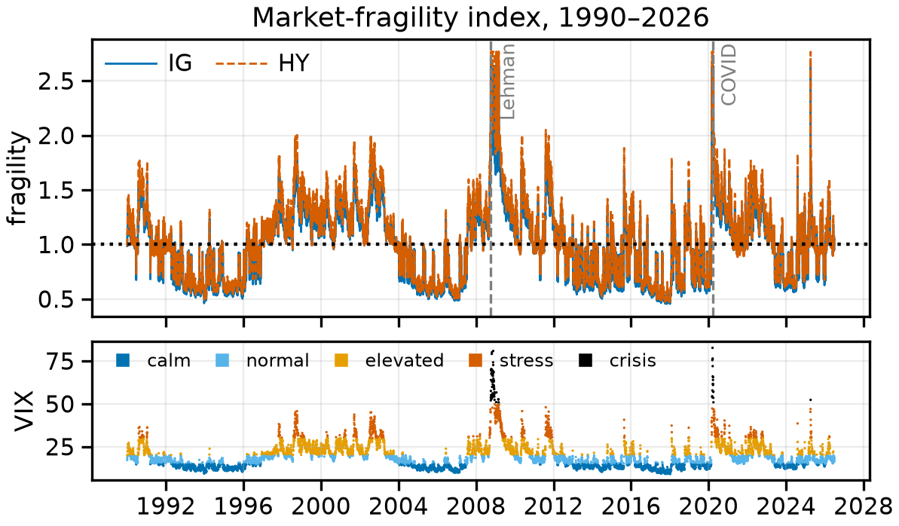
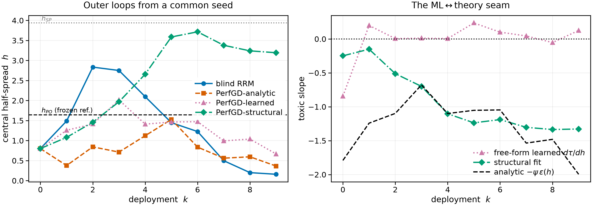

Logical skeletons of the six stability results are written in Lean 4 against Mathlib and released in the repository, but they are not yet compiled or checked.
Abstract
In over-the-counter corporate bond markets, dealers compete for client trades by quoting bid and ask prices. Tighter quotes attract more business, but also informed customers more likely to trade ahead of adverse price moves, leaving the dealer holding the risk. As dealers increasingly use machine learning to set quotes, they retrain these models on the trades their own quotes attract, creating a feedback loop in which each model reshapes the market that generates its next training data. The question is therefore not only whether a quoting model performs well, but whether the market it creates stays stable as the model learns from it. Existing performative prediction theory gives a sharp stability condition, yet expresses it through abstract properties of the learning objective a trading desk cannot measure before deployment. We introduce REFLEX, a framework that replaces those unobservable quantities with three measurable features of dealer behavior: how strongly trading volume responds to tighter quotes, how sharply the dealer's objective bends around its optimum, and how quickly informed flow increases as spreads narrow. REFLEX combines these into a single retraining modulus, a pre-deployment stability margin estimated from a desk's own quote and execution history that predicts whether repeated retraining will converge or amplify itself. In simulation, predicted and measured stability agree within 8%, and competing dealers increase instability by 1.74x with two and 3.16x with three, as predicted. Where ordinary retraining becomes unstable at modulus 1.21, a structurally anchored correction converges as blind retraining collapses. Calibrated over 36 years of public market data, stability headroom falls roughly 4.4x for investment grade and 4.3x for high yield from calm to crisis regimes. Ultimately, REFLEX turns an abstract convergence theorem into a market-level safety margin.
Problem
Dealers in OTC corporate bond markets retrain ML quoting models on flow their own quotes induce. This is a performative-prediction loop whose stability constants (epsilon, beta, gamma) are abstract and cannot be measured before deployment.
Approach
REFLEX embeds performative prediction in a GLFT-style market-making model. It derives the stability constants in closed form from fill-curve curvature, P&L scale, and toxic-flow slope, giving a retraining modulus m = epsilon*beta/gamma. Closed-form extensions cover PerfGD correction, multi-dealer competition, finite samples, multi-bond factor scaling, and lazy deployment. Each is checked against a learned simulator loop and backed by 66 numerical certificates plus uncompiled Lean 4/Mathlib formal skeletons.

Figure 2. Predict-then-verify phase diagram over the feedback gain f : measured modulus (median, IQR band, and R4 robust band over 8 seeds) against the a-priori closed form at the probe spread and the saturating fixed-point curve, with the measured ( f^{*}\approx 3.17 ) and predicted ( 4.70 ) crossings marked.
Results
Predicted and measured stability agree within 8%, and competition amplifies instability by 1.74x with two dealers and 3.16x with three. A structurally anchored correction converges where blind retraining collapses, at modulus 1.21. On 36 years of data, stability headroom falls about 4.4x for investment grade and 4.3x for high yield from calm to crisis regimes.

Figure 1. The daily market-fragility index, 1990–2026: the R1 closed forms evaluated on real data. Top: \mathrm{fragility}(t)=\mathrm{median}(\varepsilon^{*})/\varepsilon^{*}(t) for IG (solid) and HY (dashed), with the Lehman and COVID-freeze dates marked. Bottom: the VIX spine, colored by volatility regime. The crisis plateau reflects the degenerate crisis-cell fit and is flagged, not hidden.

Figure 4. Left: half-spread trajectories of the four learned retraining loops from a common seed in the RRM-unstable regime (the frozen-reference h_{\mathrm{PO}} and h_{\mathrm{SP}} lines are context, not the benchmark; Sec. 6.5 ). Blind RRM collapses; the structurally anchored loop converges to the realized performative optimum. Right: the three-way ML \leftrightarrow theory seam, showing the fre